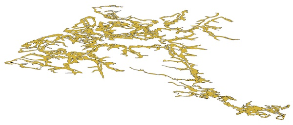
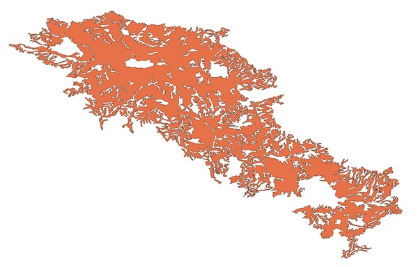

|
CGAL 6.0 - 2D Polygon Repair
|
Loading...
Searching...
No Matches
|
CGAL 6.0 - 2D Polygon Repair
|
This package implements a polygon repair method. Starting from possibly invalid input in the form of a polygon, polygon with holes or multipolygon with holes, the method computes an arrangement of the input edges, labels each face according to what it represents (exterior, polygon interior or hole), and reconstructs the polygon(s) represented by the arrangement. The method returns valid output stored in a multipolygon with holes.
Different arrangement and labelling heuristics are possible, but currently only the even-odd rule is implemented in this package. This rule results in areas that are alternately assigned as polygon interiors and exterior/holes each time that an input edge is passed. It does not distinguish between edges that are part of outer boundaries from those of inner boundaries. In a next version we will add the winding number rule.
Figure 16.1 Valid: (a) polygon, (b-c) polygons with holes, and (d-e) multipolygons with holes. (c) and (e) show cases where boundaries intersect tangentially at a single vertex.
Figure 16.2 Invalid: (a) self-intersecting polygon self-intersection, (b) self-touching polygon, (c-d) polygons with badly nested holes, (e) polygon with hole touching at edge, (f) polygon with hole that separates interior into two parts, (g) multipolygon with overlapping polygons, and (h) multipolygon with polygons that touch at an edge.
The conditions listed above are sufficient to define valid polygons, polygons with holes and multipolygons with holes for most applications. However, in order to ensure unique deterministic output from the repair algorithm, the valid multipolygons with holes returned by the package conform to more strict criteria:
Broadly, the algorithm consists of three steps:
Figure 16.3 Examples of polygons with holes (a-d) and multipolygons with holes (e-h) before (left) and after (right) being repaired.
For the purposes of the repair operation, the input polygon, polygon with holes or multipolygon is merely used as a container of input line segments. These line segments are added to the arrangement as edges. Internally, this is done using a constrained triangulation where they are added as constraints.
With the even-odd rule, only the edges that are present an odd number of times in the input will be edges in the final arrangement. When these edges are only partially overlapping, only the parts that overlap an odd number of times will be edges in the final arrangement.
This procedure is done in two steps: 1. preprocessing to eliminate identical edges that are present an even number of times, and 2. adding edges incrementally while applying an even-odd counting mechanism, which erases existing (parts of) edges when new overlapping ones are added.
First, the polygon exterior is labeled. For this, all of the faces that can be accessed from the exterior without passing through an edge are labeled as exterior faces.
Then, all other faces are labeled. For the even-odd rule, the label applied alternates between polygon interior and hole every time that an edge is passed.
The algorithm reconstructs the multipolygon boundary by boundary, obtaining counter-clockwise cycles for outer boundaries and clockwise cycles for inner boundaries. Once all boundaries have been reconstructed, the boundaries are assembled into multipolygons using the face labels to know which polygon with holes inner/outer boundaries belong to, and using the orientation to distinguish between the outer and inner boundaries of each polygon with holes.
If the input is already valid, the method will return a valid output representing the same area. However, the output might be different in order to conform to the stricter conditions to generate deterministic output (see Stricter Conditions for Output).
Also, it is worth noting that even the repair of a single polygon without holes but with self-intersections can result in a multipolygon with holes. This is why the repair function will always return a multipolygon with holes. The user can then check whether it consists of a single polygon with holes, and if a polygon with holes has zero holes and extract these if needed.
It is possible to repair a polygon, polygon with holes or multipolygon with holes using the even-odd rule by calling the Polygon_repair::repair() function as shown in the following example. This function returns a repaired multipolygon with holes.
File Polygon_repair/repair_polygon_2.cpp
The method can repair large invalid polygons of millions of vertices in a few seconds as long as the number of intersections between line segments is limited. This is a realistic assumption with many invalid data sets, which only have relatively minor issues involving a small number of their vertices/edges. However, it is worth noting that there can be a potentially quadratic number of intersection between edges in the worst case, leading to much worse performance since all of these intersections need to be calculated in the overlay.
| Polygon | Vertices | Holes | Time |
|---|---|---|---|
|  | 101973 | 298 | 0.652 sec |
|  | 43925 | 125 | 0.190 sec |
The polygon repair method as originally developed is described by Ledoux et al. [1] and implemented in the prepair software. This package is a reimplementation of the method with a new approach to label and reconstruct the multipolygons. It also incorporates improvements later added to prepair, such as the application of the even-odd counting heuristics to edges, which enables correct counting even on partially overlapping edges.
Ken Arroyo Ohori developed this package during the Google Summer of Code 2023 mentored by Sébastien Loriot and Andreas Fabri.